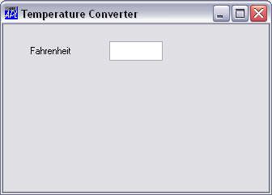

Now let's add the edit field for Fahrenheit. We will call it F and place it alongside the label, but 40% along. Initially the field will be empty. We will make it 20% wide but let its height default. ⎕WC will make it just big enough to fit the current font height. As the field is to handle numbers, we will set its FieldType to 'Numeric'.
'TEMP.F' ⎕WC 'Edit' '' (10 40)(⍬ 20)('FieldType' 'Numeric')